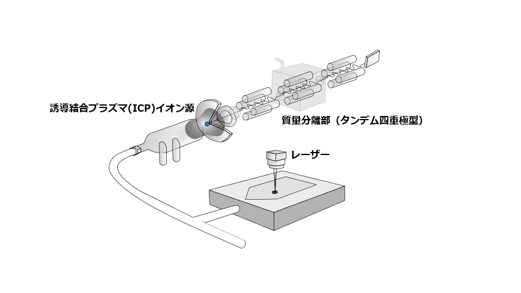
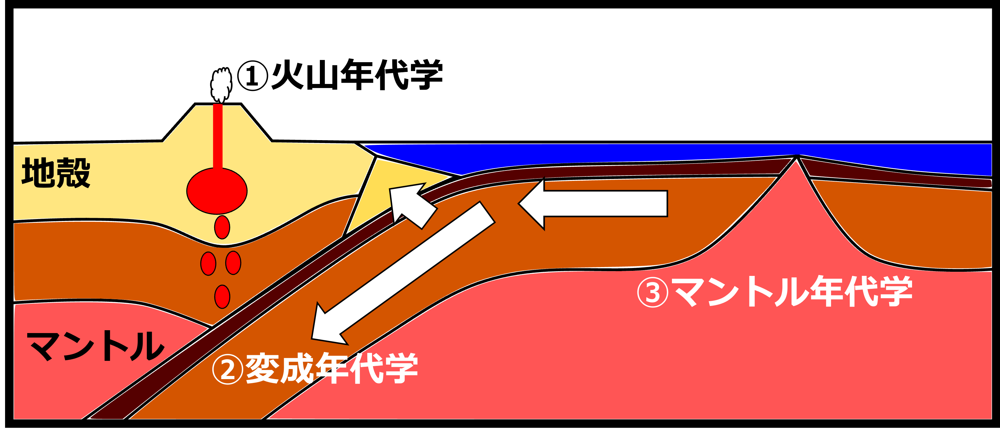

分析化学と地球化学の根本的な理解に努める。
原理を突き詰めて考え、新たな地学時計を創る。
あらゆる鉱物から年代情報を抽出し，様々な地質現象に年代値の杭を打つ。
地球年代学は絶え間ない同位体比分析法の開発とその放射性同位体年代測定法への応用により進展してきました。 特に近年は年代測定の信頼性と正確性向上のため、地質試料の内部組織を区別して実施する高空間分解同位体比分析法の開発が進んでいます。 地球内部で結晶化した鉱物粒子の内部を電子顕微鏡などで観察すると縞模様が見られることがあります。その一つ一つの縞模様は別々の地質イベント（火成作用や変成作用など）を経て結晶化した可能性があり、この縞模様一つ一つを区別して年代測定を実施することで鉱物形成にかかわる火成作用や変成作用に関してより詳細な描像を得ることができます。 私は特に局所同位体比分析法の中でもレーザーアブレーションICP質量分析法（LA-ICP-MS）に着目し、主として基礎と応用に大別される以下の二つの方向性で研究を進めています。
I. LA-ICP-MSに関する基礎的な研究
LA-ICP-MSの原理に関する基礎的な研究については、レーザーアブレーション時の素過程に着目してLA-ICP-MSにまつわる非スペクトル干渉(いわゆるマトリクス効果)の原因究明を進めています。 非スペクトル干渉とはスペクトル干渉以外の干渉に関する総称であり、主として元素の感度変化にまつわるものです。 同位体比測定に基づく年代測定では、放射壊変系列の親核種と子孫核種(たとえばウランと鉛)の存在度比を正確に決定する必要があります。 LA-ICP-MSを用いた元素分析では、揮発性の違いやイオン化ポテンシャルの違いに依って元素ごとに感度が異なり、さらに試料マトリクスの違いに依っても元素間の感度比が変化します。 この元素ごとの感度の違いは正確な年代測定の上で問題となり、実際的には年代値既知のマトリクス合致標準の分析を通じた正確性の評価が必要となります。 しかしながら、個々の分析目的に即した固体標準をあらゆる用途について用意することは困難であり、このことは年代測定のみならず分析化学における究極的な問題の一つとなっています。 そこでレーザーアブレーションの素過程に着目して非スペクトル干渉に関する研究を進めています（今後の研究の進展に乞うご期待）。
- 
II. 新規年代測定法の開発および地質学研究への応用

①火山年代学
火山岩に産する斑晶鉱物はマグマ溜まり内部における結晶化時の情報を保存するタイムカプセルであり、斑晶鉱物の研究を通じて火山噴火以前のマグマ溜まりの過去について知ることができます。 しかしながら、その過去を調べるためにはタイムカプセルとなる鉱物が火山噴火以前のいつの情報を記録しているか（噴出直前？何百年前？何千年前？何万年前？）を明確にする必要があります。 本研究では10万年より若い鉱物に対する年代測定法を新たに確立し、マグマ溜まり内部における諸過程に対して時間の観点から制約を与えることを目標とします。
・局所U–Th放射非平衡年代測定法の開発 Niki et al. (2022, GGR)(第四紀ジルコンの年代分析法を立ち上げました！)
本論文では第四紀ジルコンに対する局所U–Th放射非平衡年代分析法を新たに開発し、実際に1万年前から11万年前のジルコン試料に適用しました。 本手法では高速多点フェムト秒レーザーアブレーション装置とコリジョンセルを搭載した四重極型ICP質量分析装置を用います。 従来法では正確な年代測定のため複雑な干渉補正の実施が必要とされましたが、本研究ではコリジョンセルを用いて干渉イオンを除去し、干渉補正を行わずに年代測定を実施しています。
②変成年代学
プレート運動に伴って地下深部に持ち込まれた岩石は、地表より温度も圧力も高い環境下で構成鉱物の再結晶を経験します(変成作用)。 そのような変成作用により生じる鉱物(変成鉱物)がいつどこで形成されたかを明らかにすることで、プレート運動の履歴や地下深部の環境を詳らかにすることができます。 しかしながら、一つの鉱物から"いつ"と"どこ"の双方について情報を得ることは難しく、様々な鉱物種を活用して多角的に研究を進める必要があります。 私の研究では様々な鉱物種と放射壊変系を網羅的に検討し、局所分析法の改良に努め、変成鉱物から新たな年代情報を取得することを目指しています。 特に"どこ"を記録する一方で従来は年代測定が困難だとされた柘榴石に着目し、柘榴石に対する局所年代測定法の開発と実際の変成岩試料への応用を進めています。
・三波川帯に産する変成高圧石灰岩のハイブリッド年代学(柘榴石，チタン石，ジルコン)
さまざまな鉱物種（ジルコン，柘榴石，チタン石，燐灰石など）に対するLA-ICP-MSを用いた高精度局所U–Th–Pb年代測定法の開発を通じて、一つの岩石が経験し、記録している多段階の地質現象について詳細な年代情報を得ることが可能となりました（マルチ年代学、ハイブリッド年代学）。
Yoshida et al. (2021, Lithos)(第二著者としてチタン石年代測定に貢献) チタン石のU–Pb年代測定により、チタン石の中心部と縁辺部がそれぞれプレート沈み込み以前(約2億年前)、プレート沈み込み初期(約1.3億年前)の情報を記録していることが明らかになりました。
Niki et al. (2022, JMPS)(柘榴石U-Pb年代分析法の立ち上げ・三波川帯に産する柘榴石の年代分析を実施) 灰礬柘榴石のU–Pb年代測定により、約1億年前というエクロジャイト相変成作用の時期を制約しました。
③マントル年代学
地下深部のマントルを構成する超苦鉄質岩には、年代測定に活用可能な放射性元素がほとんど含まれません。したがって、マントルを構成する岩石・鉱物の年代測定を通じた年代情報の取得は困難であり、このことは地球史を通じたマントルの変化やプレート・プリュームテクトニクスに駆動されるマントルのダイナミクスを解明する上での妨げとなっています。この年代学のフロンティアに対して、新しい地球化学的発想や同位体比分析技術の向上をベースに立ち向かっていきます。
・分化天体の熱年代学
Ito et al. (2025, GCA) 超苦鉄質隕石のブラチナイトに含まれるリン酸塩鉱物に着目して年代情報を取得しました。年代測定の対象となるリン酸塩鉱物のウラン濃度は100 ppb程度とごく僅かでしたが、私たちの同位体比分析技術の粋を活用して44.8±0.3億年前というU–Pb年代を得ることができました！この年代値は44.8億年前時点でも微惑星内部が熱的に活発だったという可能性を示唆しています。
・蛇紋岩の年代学
Sawada et al. (2025, Sci. Rep.) 一般的に蛇紋岩に年代測定の対象となる鉱物は含まれませんが、岩体の中に不均質に局在するバッデレイ石・ジルコンを発見（！）し、年代情報を取得しました。主著者の沢田さんが力強い怪文書を認めているので、発見経緯など詳しい情報はそのブログ記事をぜひご覧ください。蛇紋岩年代学の嚆矢となる研究に高解像度微量元素イメージングと年代測定で貢献することができ、とても嬉しいです。